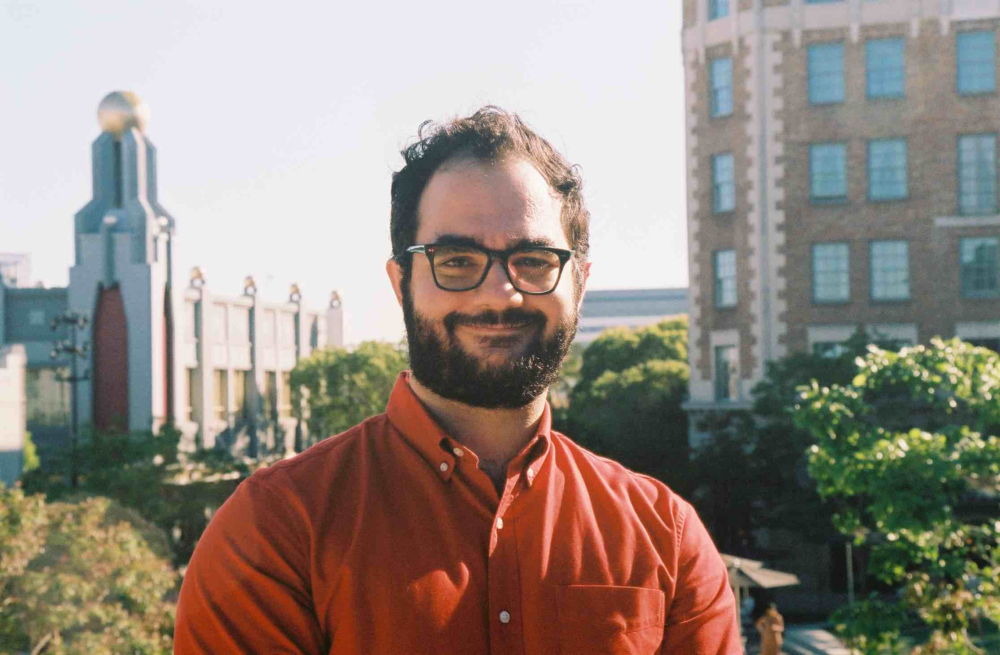

NADER MOTAMEDI

Contact
SUMMARY
I am an entertainment professional looking to transition into software development
EDUCATION
Loyola Maymount University - School of Film and Television
B.A. Film and Television Production | B.B.A. Marketing
GPA: 3.7 | Dean's List | Cum Laude
PROFESSIONAL EXPERIENCE
Fourward
Manager/Producer
- Research and develop ideas for film and TV projects
- In constant contact with casting directors and producers to pitch our clients
- Negotiate deals on behalf of our clients
Assistant
- Supported Head of Film and Television and Head of Talent in creative development, business affairs, scheduling,
accounting, and arranging travel for high profile clients, as well as handling managers’ schedules, calls, travel
arrangements, and expenses
- Managed special projects, conducted research, created decks and reels, and compiled talent lists for a slate of 260+
projects
- Judged and provided creative input on submitted scripts for representation and client consideration
Circle 8 Productions
Production Coordinator
- Promoted by executive leadership to run productions across 4 states, organizing crew, equipment, permits, and travel
- Led Development team on strategic outreach to customers in newly entered markets, creating themed episodes such as
Restaurants in Los Angeles and Pharmaceuticals in Boston
- Built foundational relationships with crew and cast to ensure effective production environment
Development Assistant
- Was responsible for developing story for subjects such as Pandora, Clorox, Hasbro, and TripAdvisor
- Created show decks and pitch documents for internal and external presentation
- Coordinated heavy scheduling, travel, and calls for Executive Producer, Showrunner, and CEO
SKILLS & INTERESTS
Technical
- inEntertainment
- Movie Magic
- Google Analytics
Hobbies